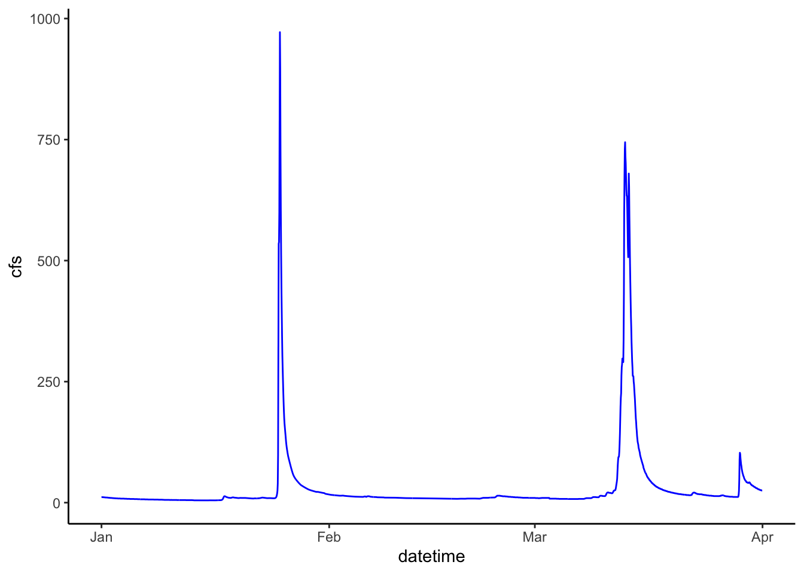

Chapter 10 Exam 1 (50 pts)
In this project you are going to download streamflow data from 4 USGS gauges. One in Florida, one in Vermont, one in Arizona, and one in Montana. You are then going to apply the skills we have learned in Units 1-4 of Watershed Analysis to make graphs of data, compute statistical metrics of the data, plot various statistical distributions, calculate flow metrics at various temporal scales, determine yields (e.g., mm per year), and make some data-driven conclusions about the hydrology and climate at each site.
Show all of your code and comment it. If you comment what you are trying to do you will likely recieve some credit even if the code doesn’t ultimately work.
Similar to labs you will knit and submit a .Rmd and .html on D2L.
10.1 To start load some packages. There are other packages you will need in addition to the two I’ve listed here.
library(tidyverse)## ── Attaching packages ─────────────────────────────────────── tidyverse 1.3.2 ──
## ✔ ggplot2 3.4.0 ✔ purrr 1.0.1
## ✔ tibble 3.1.8 ✔ dplyr 1.1.0
## ✔ tidyr 1.2.1 ✔ stringr 1.5.0
## ✔ readr 2.1.3 ✔ forcats 0.5.2
## ── Conflicts ────────────────────────────────────────── tidyverse_conflicts() ──
## ✖ dplyr::filter() masks stats::filter()
## ✖ dplyr::lag() masks stats::lag()library(dataRetrieval)
library(lubridate)## Loading required package: timechange
##
## Attaching package: 'lubridate'
##
## The following objects are masked from 'package:base':
##
## date, intersect, setdiff, unionlibrary(leaflet)
library(knitr) # for making a table in RMarkdown10.2 Define parameters for your data download.
param_cd <- "00060"
service_cd <- "dv"
start <- as.Date("1990-10-01")
end <- as.Date("2022-10-01")
sites <- c("02270500", "04282000", "06019500", "09402000")Use dataRetrieval to get information on the gauges.
gauge_drain <- readNWISsite(site = sites) %>%
select(site_no, station_nm, dec_lat_va, dec_long_va, drain_area_va)
gauge_time <- whatNWISdata(site = sites, parameterCd = "00060", service = "dv") %>%
select(site_no, begin_date, end_date, count_nu)
gauge_info <- left_join(gauge_drain, gauge_time, by = "site_no")10.3 Problem 1.
10.3.1 (5 pts)
Make a map that shows the location of the 4 gauges. Have the label be the gauge name and the popup the drainage area. Also print a table that only has site_no, station_nm, dec_lat_va, dec_long_va, and drain_area_va for the 4 gauges.
library(leaflet)
(gauge_map <- leaflet() %>%
addProviderTiles("Stamen.Terrain") %>%
addAwesomeMarkers(data = gauge_info, lat = ~dec_lat_va, lng = ~dec_long_va, label = ~station_nm, popup = ~as.character(drain_area_va))
)gauge_table <- gauge_info %>%
select(site_no, station_nm, dec_lat_va, dec_long_va, drain_area_va)
table_1 <- kable(gauge_table, caption = "Table 1. Name, location, and drainage area for gauges used in this project.")
table_1| site_no | station_nm | dec_lat_va | dec_long_va | drain_area_va |
|---|---|---|---|---|
| 02270500 | ARBUCKLE CREEK NEAR DE SOTO CITY, FL | 27.44239 | -81.29703 | 379 |
| 04282000 | OTTER CREEK AT CENTER RUTLAND, VT | 43.60368 | -73.01316 | 307 |
| 06019500 | Ruby River above reservoir near Alder, MT | 45.19232 | -112.14282 | 534 |
| 09402000 | LITTLE COLORADO RIVER NEAR CAMERON, AZ | 35.92638 | -111.56737 | 26459 |
10.4 Problem 2
Download Q for the gagues and add the station name and the drainage area to the flow df.
flow <- readNWISdata(sites = sites, parameterCd = param_cd, service = service_cd, startDate = start, endDate = end) %>%
renameNWISColumns() %>%
select(site_no, date = dateTime, flow_cfs = Flow)
flow <- left_join(flow, gauge_info, by = "site_no")
flow <- flow %>%
select(station_nm, site_no, date, flow_cfs, drain_area_va)
str(flow)## 'data.frame': 46489 obs. of 5 variables:
## $ station_nm : chr "ARBUCKLE CREEK NEAR DE SOTO CITY, FL" "ARBUCKLE CREEK NEAR DE SOTO CITY, FL" "ARBUCKLE CREEK NEAR DE SOTO CITY, FL" "ARBUCKLE CREEK NEAR DE SOTO CITY, FL" ...
## $ site_no : chr "02270500" "02270500" "02270500" "02270500" ...
## $ date : POSIXct, format: "1990-10-01" "1990-10-02" ...
## $ flow_cfs : num 642 622 569 527 499 452 398 340 328 501 ...
## $ drain_area_va: num 379 379 379 379 379 379 379 379 379 379 ...
## - attr(*, "url")= chr "https://waterservices.usgs.gov/nwis/dv/?sites=02270500,04282000,06019500,09402000¶meterCd=00060&startDT=199"| __truncated__
## - attr(*, "siteInfo")='data.frame': 4 obs. of 13 variables:
## ..$ station_nm : chr [1:4] "ARBUCKLE CREEK NEAR DE SOTO CITY, FL" "LITTLE COLORADO RIVER NEAR CAMERON, AZ" "OTTER CREEK AT CENTER RUTLAND, VT" "Ruby River above reservoir near Alder, MT"
## ..$ site_no : chr [1:4] "02270500" "09402000" "04282000" "06019500"
## ..$ agency_cd : chr [1:4] "USGS" "USGS" "USGS" "USGS"
## ..$ timeZoneOffset : chr [1:4] "-05:00" "-07:00" "-05:00" "-07:00"
## ..$ timeZoneAbbreviation: chr [1:4] "EST" "MST" "EST" "MST"
## ..$ dec_lat_va : num [1:4] 27.4 35.9 43.6 45.2
## ..$ dec_lon_va : num [1:4] -81.3 -111.6 -73 -112.1
## ..$ srs : chr [1:4] "EPSG:4326" "EPSG:4326" "EPSG:4326" "EPSG:4326"
## ..$ siteTypeCd : chr [1:4] "ST" "ST" "ST" "ST"
## ..$ hucCd : chr [1:4] "03090101" "15020016" "04150402" "10020003"
## ..$ stateCd : chr [1:4] "12" "04" "50" "30"
## ..$ countyCd : chr [1:4] "12055" "04005" "50021" "30057"
## ..$ network : chr [1:4] "NWIS" "NWIS" "NWIS" "NWIS"
## - attr(*, "variableInfo")='data.frame': 1 obs. of 7 variables:
## ..$ variableCode : chr "00060"
## ..$ variableName : chr "Streamflow, ft³/s"
## ..$ variableDescription: chr "Discharge, cubic feet per second"
## ..$ valueType : chr "Derived Value"
## ..$ unit : chr "ft3/s"
## ..$ options : chr "Mean"
## ..$ noDataValue : logi NA
## - attr(*, "disclaimer")= chr "Provisional data are subject to revision. Go to http://waterdata.usgs.gov/nwis/help/?provisional for more information."
## - attr(*, "statisticInfo")='data.frame': 1 obs. of 2 variables:
## ..$ statisticCd : chr "00003"
## ..$ statisticName: chr "Mean"
## - attr(*, "queryTime")= POSIXct[1:1], format: "2023-02-15 18:17:18"str(gauge_info)## 'data.frame': 4 obs. of 8 variables:
## $ site_no : chr "02270500" "04282000" "06019500" "09402000"
## $ station_nm : chr "ARBUCKLE CREEK NEAR DE SOTO CITY, FL" "OTTER CREEK AT CENTER RUTLAND, VT" "Ruby River above reservoir near Alder, MT" "LITTLE COLORADO RIVER NEAR CAMERON, AZ"
## $ dec_lat_va : num 27.4 43.6 45.2 35.9
## $ dec_long_va : num -81.3 -73 -112.1 -111.6
## $ drain_area_va: num 379 307 534 26459
## $ begin_date : Date, format: "1939-06-21" "1928-05-31" ...
## $ end_date : Date, format: "2023-02-14" "2023-02-14" ...
## $ count_nu : num 30408 34590 30850 27653
## - attr(*, "queryTime")= POSIXct[1:1], format: "2023-02-15 18:17:15"
## - attr(*, "url")= chr "https://waterservices.usgs.gov/nwis/site/?siteOutput=Expanded&format=rdb&site=02270500,04282000,06019500,09402000"
## - attr(*, "headerInfo")=List of 12
## ..$ date : chr "Thu, 16 Feb 2023 01:17:14 GMT"
## ..$ server : chr "Apache-Coyote/1.1"
## ..$ strict-transport-security : chr "max-age=31536000"
## ..$ vary : chr "Accept-Encoding"
## ..$ content-encoding : chr "gzip"
## ..$ content-type : chr "text/plain;charset=UTF-8"
## ..$ cache-control : chr "max-age=900"
## ..$ expires : chr "Thu, 16 Feb 2023 01:32:15 GMT"
## ..$ x-ua-compatible : chr "IE=edge,chrome=1"
## ..$ access-control-allow-origin: chr "*"
## ..$ x-frame-options : chr "deny"
## ..$ transfer-encoding : chr "chunked"
## ..- attr(*, "class")= chr [1:2] "insensitive" "list"
## - attr(*, "comment")= chr [1:59] "#" "#" "# US Geological Survey" "# retrieved: 2023-02-15 20:17:15 -05:00\t(vaas01)" ...str(gauge_drain)## 'data.frame': 4 obs. of 5 variables:
## $ site_no : chr "02270500" "04282000" "06019500" "09402000"
## $ station_nm : chr "ARBUCKLE CREEK NEAR DE SOTO CITY, FL" "OTTER CREEK AT CENTER RUTLAND, VT" "Ruby River above reservoir near Alder, MT" "LITTLE COLORADO RIVER NEAR CAMERON, AZ"
## $ dec_lat_va : num 27.4 43.6 45.2 35.9
## $ dec_long_va : num -81.3 -73 -112.1 -111.6
## $ drain_area_va: num 379 307 534 26459
## - attr(*, "queryTime")= POSIXct[1:1], format: "2023-02-15 18:17:15"
## - attr(*, "url")= chr "https://waterservices.usgs.gov/nwis/site/?siteOutput=Expanded&format=rdb&site=02270500,04282000,06019500,09402000"
## - attr(*, "headerInfo")=List of 12
## ..$ date : chr "Thu, 16 Feb 2023 01:17:14 GMT"
## ..$ server : chr "Apache-Coyote/1.1"
## ..$ strict-transport-security : chr "max-age=31536000"
## ..$ vary : chr "Accept-Encoding"
## ..$ content-encoding : chr "gzip"
## ..$ content-type : chr "text/plain;charset=UTF-8"
## ..$ cache-control : chr "max-age=900"
## ..$ expires : chr "Thu, 16 Feb 2023 01:32:15 GMT"
## ..$ x-ua-compatible : chr "IE=edge,chrome=1"
## ..$ access-control-allow-origin: chr "*"
## ..$ x-frame-options : chr "deny"
## ..$ transfer-encoding : chr "chunked"
## ..- attr(*, "class")= chr [1:2] "insensitive" "list"
## - attr(*, "comment")= chr [1:59] "#" "#" "# US Geological Survey" "# retrieved: 2023-02-15 20:17:15 -05:00\t(vaas01)" ...str(gauge_time)## 'data.frame': 4 obs. of 4 variables:
## $ site_no : chr "02270500" "04282000" "06019500" "09402000"
## $ begin_date: Date, format: "1939-06-21" "1928-05-31" ...
## $ end_date : Date, format: "2023-02-14" "2023-02-14" ...
## $ count_nu : num 30408 34590 30850 27653
## - attr(*, "queryTime")= POSIXct[1:1], format: "2023-02-15 18:17:15"
## - attr(*, "url")= chr "https://waterservices.usgs.gov/nwis/site/?seriesCatalogOutput=true&site=02270500,04282000,06019500,09402000&format=rdb"
## - attr(*, "headerInfo")=List of 12
## ..$ date : chr "Thu, 16 Feb 2023 01:17:14 GMT"
## ..$ server : chr "Apache-Coyote/1.1"
## ..$ strict-transport-security : chr "max-age=31536000"
## ..$ vary : chr "Accept-Encoding"
## ..$ content-encoding : chr "gzip"
## ..$ content-type : chr "text/plain;charset=UTF-8"
## ..$ cache-control : chr "max-age=900"
## ..$ expires : chr "Thu, 16 Feb 2023 01:32:15 GMT"
## ..$ x-ua-compatible : chr "IE=edge,chrome=1"
## ..$ access-control-allow-origin: chr "*"
## ..$ x-frame-options : chr "deny"
## ..$ transfer-encoding : chr "chunked"
## ..- attr(*, "class")= chr [1:2] "insensitive" "list"
## - attr(*, "comment")= chr [1:41] "#" "#" "# US Geological Survey" "# retrieved: 2023-02-15 20:17:15 -05:00\t(vaas01)" ...Look at the str() of your flow df to familiarize yourself with the structure of the df.
10.4.1 (1 pt) Now, make a plot of flow and color by station_nm.
flow %>%
ggplot(aes(x = date, y = flow_cfs, color = station_nm)) +
geom_line() 
10.4.2 (1pt) Next, make a facet wrap of flow at the 4 gauges.
flow %>%
ggplot(aes(x = date, y = flow_cfs, color = station_nm)) +
geom_line() +
facet_wrap(facets = "station_nm")
10.4.3 (2 pts) Make a brief comment on your visual assessment of the data. Are there any particularly large or small values? Do there appear to be any trends or cycles evident in the data?
flow %>%
ggplot(aes(flow_cfs, fill = site_no)) +
geom_density(alpha = 0.5) +
scale_x_log10()## Warning in self$trans$transform(x): NaNs produced## Warning: Transformation introduced infinite values in continuous x-axis## Warning: Removed 4528 rows containing non-finite values (`stat_density()`).